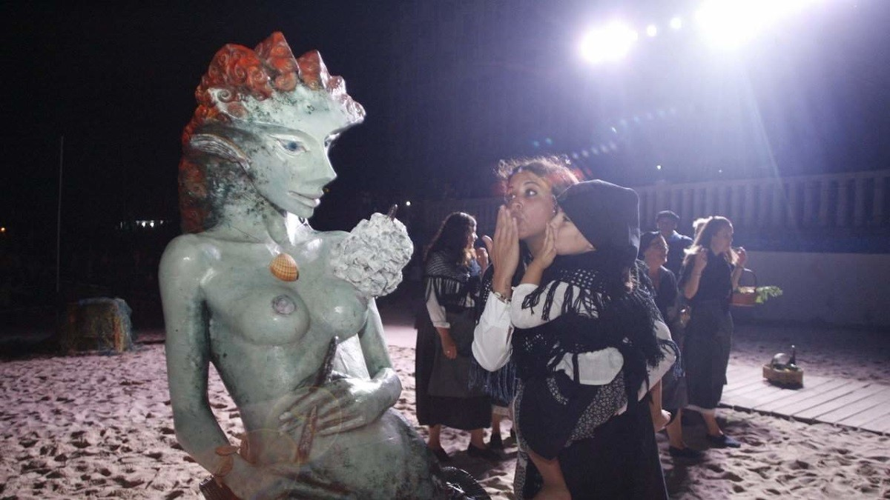
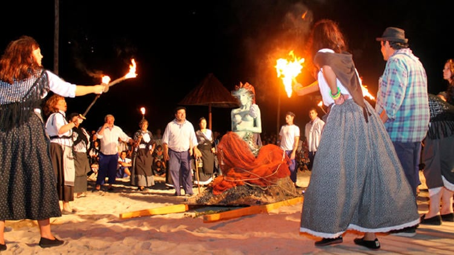
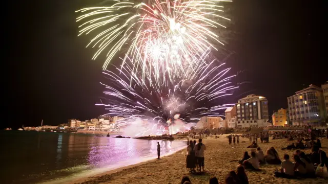

Tradición, mar y misterio en San cibrao
San Cibrao, Cervo (Lugo)
Segundo Sábado de Agosto
Interés Turístico desde 1985

La sirena es traída desde las islas Farallón hasta la playa de O Torno bajo el sonido de los cuernos.

El pueblo decide su destino en la plaza pública: ¿Es un ser bondadoso o maligno?

Tras el perdón, la fiesta estalla con música, queimada y alegría hasta el amanecer.